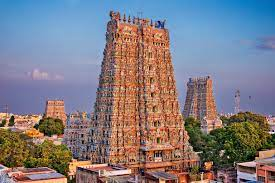

Tamil Nadu, state of India, located in the extreme south of the subcontinent.
It is bounded by the Indian Ocean to the east and south and by the states of Kerala
to the west, Karnataka (formerly Mysore) to the northwest, and Andhra Pradesh to the north.
Enclosed by Tamil Nadu along the north-central coast are the enclaves of Puducherry and
Karaikal, both of which are part of Puducherry union territory.
The capital is Chennai (Madras), on the coast in the northeastern portion of the state.
Characteristic Features
| Capital |
Chennai |
| Language |
Tamil |
| Mammal |
Nilgiri tahr |
| Bird |
Emerald Dove |